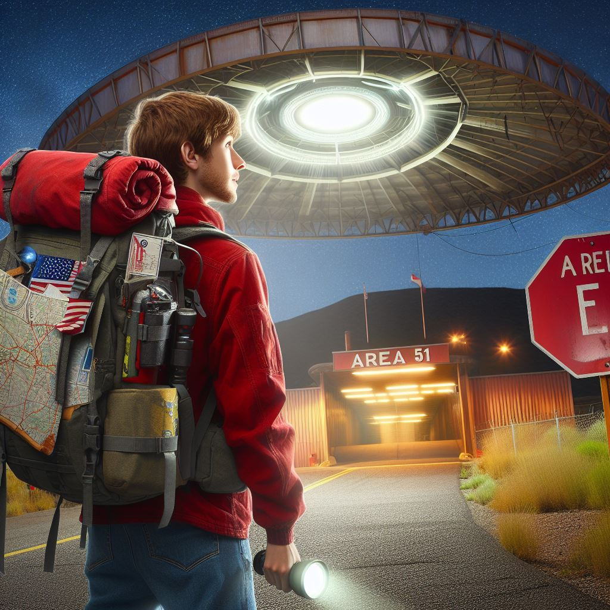

La vida de Jack

En una noche oscura y silenciosa en el desierto de Nevada, el viento soplaba suavemente sobre la vasta extensión de tierra árida que rodeaba el Área 51. La luna llena brillaba en el cielo, iluminando débilmente los edificios de aspecto futurista dispersos por el terreno. Para la mayoría de las personas, el Área 51 era simplemente una base militar secreta, envuelta en teorías conspirativas y misterios inexplicables. Pero para el agente especial Jack Reynolds, era su lugar de trabajo. Jack había sido asignado al Área 51 hace varios años y había visto cosas que desafiaban toda lógica y explicación. Desde su primera semana en el trabajo, había presenciado avistamientos de objetos voladores no identificados, experimentos científicos altamente clasificados y tecnología avanzada que desafiaba todo lo que había aprendido en su formación como agente del gobierno.
Una noche, mientras patrullaba los límites del perímetro, Jack notó un destello en el cielo. Levantó la mirada y vio una luz brillante que descendía rápidamente hacia la base. Alertó a la seguridad y corrió hacia el lugar del impacto. Cuando llegó, encontró un objeto metálico en forma de disco incrustado en la tierra. No había signos de vida en su interior, pero emanaba un zumbido constante y emitía un resplandor suave. Jack sabía que este descubrimiento era importante. Informó a sus superiores y pronto llegaron equipos de científicos y militares para investigar. Durante días, el Área 51 se convirtió en un hervidero de actividad mientras los expertos intentaban comprender la naturaleza de la nave y su origen.

A medida que pasaban los días, Jack se encontró cada vez más intrigado por el misterioso objeto. Comenzó a investigar por su cuenta, buscando pistas sobre su tecnología y propósito. Descubrió archivos clasificados que sugerían que la nave podría ser parte de un proyecto secreto de exploración espacial llevado a cabo por el gobierno. Pero antes de que Jack pudiera descubrir la verdad, ocurrió algo inesperado. Una noche, mientras estaba en su dormitorio en la base, escuchó un ruido sordo que resonaba por todo el complejo. Corrió hacia afuera y vio una nave alienígena flotando en el aire, rodeada por un aura de luz brillante. La nave se elevó lentamente hacia el cielo, desapareciendo en la oscuridad de la noche. Jack se quedó atónito, sin poder creer lo que acababa de presenciar. Sabía que su vida nunca volvería a ser la misma después de esa noche. A medida que el sol salía sobre el desierto de Nevada, Jack reflexionaba sobre el misterio del Área 51 y las infinitas posibilidades que se escondían en lo desconocido del universo.